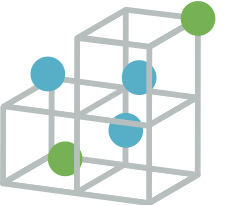
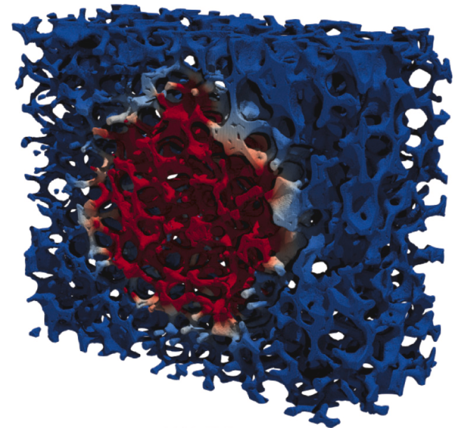
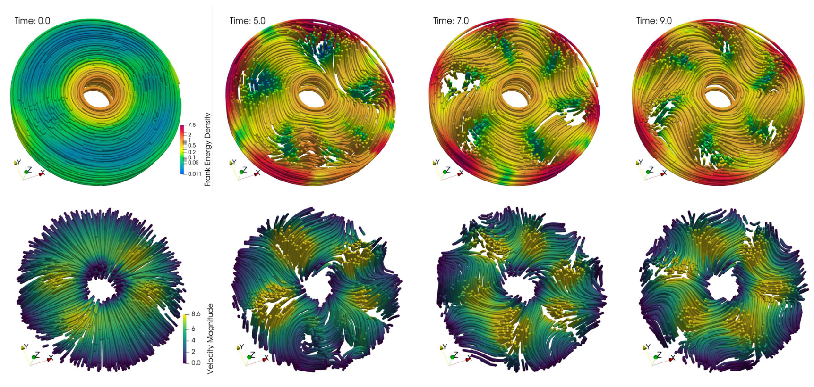
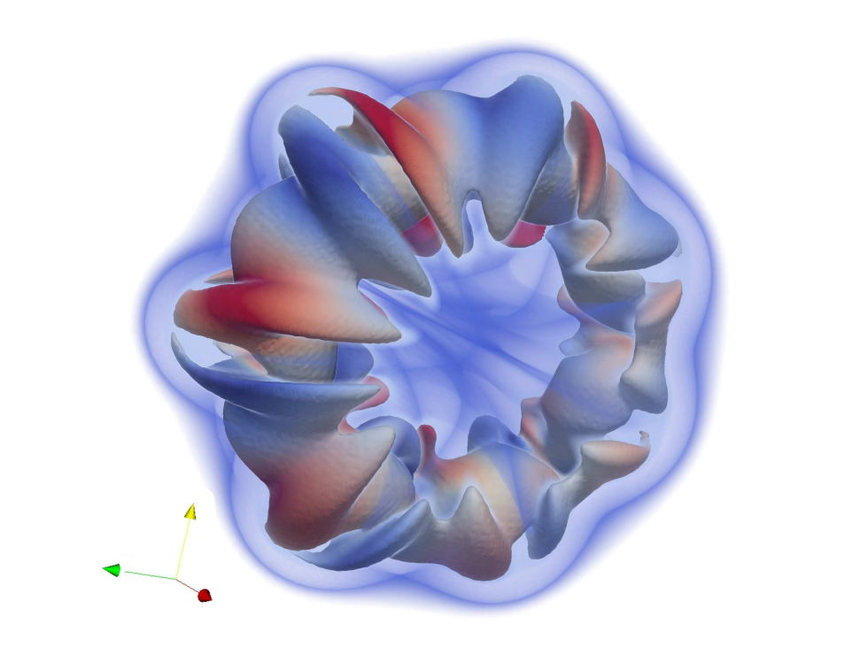

 OpenFPM is a scalable open framework for particle and particle-mesh codes on parallel computers.
Important Announcements: OpenFPM annual hackathon in Spring 2024!
Features
- Scalable serial and parallel data structures for heterogeneous computing systems available CPU and GPU-accelerated hardware
- Operators for particle methods linear differential discretization, e.g. DC-PSE, SPH
- Particle-mesh and mesh-particle interpolation schemes
- Data structures for efficient particle methods simulations, e.g. Cell-List, Verlet-List, for efficient item-based, e.g. Lennard-Jones molecular dynamics, and continuous simulations
- Sparse grid on CPU and GPU
- Support for PETSc, Eigen linear algebra backends
- Support for ODE integration operators with Boost.Numeric.Odeint
- Level-set formulation with Algoim
- GPU execution backends include CUDA, HIP, OpenMP, alpaka
- ... and many others
Contact
Use the GitHub issue tracker to report bugs/questions/comments. See the Cite us page for the citation information.
Documentation
Building from source ┊ Using Docker ┊ Examples ┊ Videos ┊ Doxygen
Selected simulations
OpenFPM is used in many projects, please see some of the simulation samples below. Other examples are available in the Example section.

Diffusive heat conduction with distributed surface sink in a sample of reticulate porous ceramics. Reconstruction of the solid phase represented as a sparse-grid level set

Visualization of the OpenFPM-simulation of one of steady-state patterns produced by the Gray-Scott reaction-system in 3D.

Dam-break simulation of weakly compressible Navier-Stokes equations in SPH formulation. The figure shows a density iso-surface indicating the fluid surface with color indicating the fluid velocity magnitude. The simulation domain is split into 4 subdomains run on 4 processors.

Fully developed bent coherent angular motion of an active fluid in a 3D annular domain with visualized polarity (top) and velocity (bottom) streamlines.

OpenFPM simulation of a vortex ring at with 256 million particles on 3072 processors using a hybrid particle-mesh Vortex Method to solve the incompressible Navier-Stokes equations